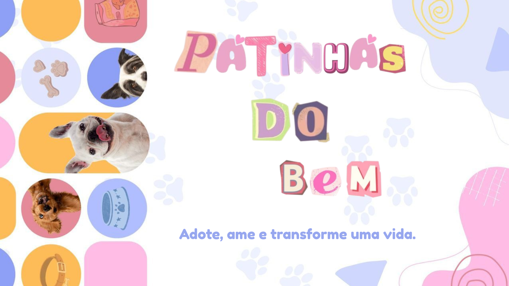

Bem-vindo!
O Patinhas do Bem é um projeto criado para ajudar cães e gatos a encontrarem um novo lar. Aqui você poderá conhecer animais disponíveis para adoção, acompanhar eventos e descobrir diferentes formas de contribuir com essa causa.

Como você pode ajudar?
- Adotar um animal
- Fazer uma doação
- Divulgar a causa